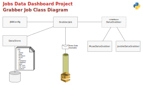

The GrabberJob is the component made in Python to grab the data from the jobs
online services.
The GrabberJob was made in Python with the following structure:

To run the GrabberJob in jddgrabber module in a Linux machine.
You need to have a ~/config.yaml file with all the right configurations for
SQS and MongoDB.
The code below can be put in a runjob.sh with proprer permissions
(chmod u+x runjob.sh)
# Refresh the code from GitHub and copy configuration
cd ~
echo "Removing old code in JobsDataDashboard-jddgrabber..."
rm -rf JobsDataDashboard-jddgrabber
git clone https://github.com/itamarc/JobsDataDashboard-jddgrabber.git
cp -v config.yaml JobsDataDashboard-jddgrabber/conf/
# Run the code
export PYTHONPATH=/home/ubuntu/JobsDataDashboard-jddgrabber/src/
cd JobsDataDashboard-jddgrabber
python3.9 -m pip install -r requirements.txt
python3.9 ./src/jddgrabber/GrabberJob.py